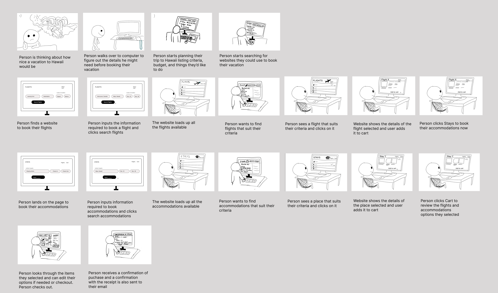

team project — team Guava
with Will Oxtoby, Andrew Chang, Adam Wan, Christina Oh & Ceci Yang
A travel booking redesign focused on one specific pain point: filtering accommodations on Expedia. Flights and stays already live on one platform — the goal was making the filtering workflow itself faster to learn and faster to use, then proving it with real usability data.
where it starts
Before touching the interface, we mapped the actual task this redesign needed to support: someone planning a trip, researching flights and a place to stay, comparing options against their own criteria, and checking out — all the friction points a booking flow needs to get right long before "filters" enters the picture.

what we changed
We scoped the redesign to the accommodations filtering workflow specifically, after finding it lacking on two fronts: efficiency and visibility of system status.
The original interface crams a large number of filters into a narrow side panel, forcing heavy scrolling just to browse what's available. Moving them into an overlay gives the filters room to breathe — fitting in a few scrolls instead of many, and making the whole set easier to scan.
The original gave no clear read on what was currently applied. We added a dedicated panel that lists active filters and shows a running count, so system status is visible without having to reopen the filter menu to check.
Rather than re-querying results the instant a filter is toggled, users select everything they want first, then apply it in one action. This gives users more control and avoids refreshing results on every single click.
how we tested it
6 university students (ages 18–24), recruited by convenience sampling — a group with basic computer literacy and likely prior experience with booking platforms. Each completed the same task on our med-fi prototype, observed directly, followed by a semi-structured interview to capture their experience in their own words.
Lo-fi prototype walkthrough
Med-fi prototype walkthrough
what we learned
The original interface scattered filtering controls across several buttons and areas. Consolidating them into a single filter modal made the next step obvious — where to go and what to do — instead of leaving users to piece it together.
Users liked having every filter in one place, clearly labeled and grouped by category (amenities, star rating, and so on). One participant said they didn't have to put in much effort at all to find what they needed — and that showed up directly in completion time.
Buttons and sliders were rated easy to learn and use at first sight — with one exception. Several users found the price-range slider hard to land on an exact number, and said a text input would have been easier than dragging for precision.
Because the prototype only supported one way to complete each step, users occasionally hit a wall. One participant instinctively tried to clear all filters from the top-right filter button — but that only worked from a separate "clear filters" control in the sidebar. A small mismatch, but a real one between what people expected and what the prototype allowed.
| Statement (scale of 1–5) | Average |
|---|---|
| Interface was easy to navigate | 4.3 |
| Easy to book accommodation matching criteria | 4.8 |
| Prior booking-site experience helped learning | 4.8 |
| Had trouble finding at least one filter | 3.0 |
| Felt easier than the original Expedia | 4.2 |
| Feedback from actions matched expectations | 4.2 |
| Always knew what to do next | 4.5 |
where this points
Across both the qualitative themes and the quantitative scores, users consistently preferred the redesign to the original — the filtering feature was more findable, the workflow felt more organized, and nobody asked for help navigating it, which we read as a sign the design was intuitive rather than just familiar.
The prototype was built with a vertical scope — deep on the filtering feature specifically, rather than broad across the whole booking flow. That means every input element still needs to be made fully functional, which would also solve the "one path only" constraint users ran into. The core direction — an overlay, an applied-filters panel, and an explicit apply action — held up well enough to build on.
what I'd do differently
We started with two lo-fi prototypes and merged the strongest ideas from each after a cognitive walkthrough, then tested the result with real users. In hindsight, our lo-fi prototypes were more polished than they needed to be for testing simple ideas — they required very little change to become the med-fi version, which suggests we spent time there that would have paid off more in the med-fi stage instead.
We also recorded every session, which let us revisit them to catch critical incidents we missed live — worth doing again. For next time, a short script introducing the study up front would streamline the session and make evaluations run more smoothly overall.